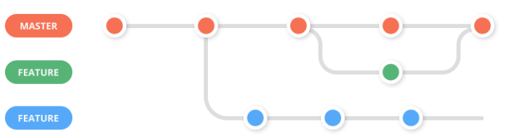
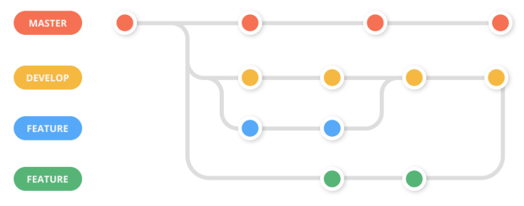

Git 深入学习
[TOC]
Introduction
如果你不满足仅仅会用 git add/commit/push/clone/ 等等这些 Git 最基础的命令，想要知其然，也知其所以然，那么我强烈推荐你去阅读 《Pro Git》 ，哪怕只把前 101 页读完，都可以对 Git 有一个系统的理解。
学习 Git 的资源：
-
Git Reference Git 速查手册
本文是我读 《Pro Git》 的学习笔记， 95% 的内容来源了该书前 101 页的内容，我对我认为重要的内容进行了归纳整理。
学习 Git，用上述两个官方资源，足矣。
名词解释
| 名词 | 解释 |
|---|---|
| master | 仓库的默认分支 |
| HEAD | HEAD 指针，指向当前工作分支的指针 |
| origin | 指代远程库 |
Questions
几个经常忘记的命令，基本上都和 checkout，reset 有关
-
取消某个文件的修改
git checkout -- file -
取消加入暂存区，只需要让这个文件回滚到之前的一个版本即可
git reset filegit reset取消所有添加到暂存区的内容 -
回滚到某个版本
git reset --hard 459f
使用 Git 做开发
Git 开发分支
5 Git workflows you can use to deliver better code and improve your development process
| Git Feature Branch Workflow | Git Feature Workflow with Develop Branch |
|---|---|
|  |  |
其他分支：
gh-pages 分支：存放静态文件，通常用于静态网页部署
Git 辅助软件
-
SourceTree: A free Git client for Windows and Mac
Git 装饰软件，提供了一系列可视化的功能
VCS Introduction
Version control is a system that records changes to a file or set of files over time so that you can recall specific versions later.
It allows you to revert selected files back to a previous state, revert the entire project back to a previous state, compare changes over time, see who last modified something that might be causing a problem, who introduced an issue and when, and more. Using a VCS also generally means that if you screw things up or lose files, you can easily recover. In addition, you get all this for very little overhead.
History of Version Control
-
Copy files to another directory
-
Local version control system
-
Centralized version control system
For example: SVN
Advantage: help people collaborate with others
Disadvantage: loss everything if central machine break down
-
Distributed Version Control System
For example: Git (2005)
软件开发中对于版本控制的需求推动了版本控制系统的发展。正是因为正式开发中出现过中心服务器崩溃导致历史版本代码丢失的问题，才会催生出分布式的版本控制工具。
Environments to use VCS
只要涉及到文本文件，无论是写 Blog，还是写代码，都可以用 Git 进行版本控制，上传到 Github 进行分布式的管理。
Difference between Git and other VCS(for example: SVN)
-
Main difference: Snapshots, Not Differences
SVN: Think of the information they store as a set of files and the changes made to each file over time (this is commonly described as delta-based version control)
Git: Git thinks about its data more like astream of snapshots.
-
Nearly Every Operation Is Local (offline work)
-
Git uses hash to checksum each subtle chage of file
Git Terminology
Centralized Vs Distributed
CVS 和 SVN 都是集中式的版本控制工具 Git 是分布式的版本控制工具
集中式版本控制工具有一个中央服务器，所有的 client 都要从与 server 进行通信，如果 server 挂掉了，那么所有的 history 就没了。
分布式版本控制工具是去中心化的，没有中央服务器，每个人的电脑都有一个完整的版本库。 if any server dies, and these systems werecollaborating via that server, any of the client repositories can be copied back up to the server to restore it. Every clone is really a full backup of all the data
Three sections: Working Directory, Staging Area, Repository
Working directory: 工作区.git dir 所在文件夹 Staging Area：暂存区 Repository：仓库
git add：把 工作区 中的 modified 的内容添加到 暂存区；
git commit：把暂存区的所有内容提交到当 仓库 中。
untracked or tracked
Tracked files are files that were in the last snapshot; they can be unmodified, modified, or staged. In short, tracked files are files that Git knows about.
Untracked files are everything else — any files in your working directory that were not in your last snapshot and are not in your staging area.
tracked 文件就是 Git 开始追踪的文件；untracked 文件就是 Git 没有追踪的文件，如果需要追踪，需要 git add
.gitignore
Create a file named .gitignore to list patterns to match the untracked files.
.gitignore 文件可以有多个，每个文件只在当前文件夹内递归生效.
.gitignore 的语法规则：
- 注释：#
- 兼容 Linux 的通配符规则，并且规则有递归性
/pattern表示只当前文件夹下的 pattern 匹配到的文件pattern/表示忽略所有 pattern 匹配到的文件夹!pattern表示 track 该 pattern 匹配到的文件
Demos:
# ignore all .a files
*.a
# but do track lib.a, even though you're ignoring .a files above
!lib.a
# only ignore the TODO file in the current directory, not subdir/TODO
/TODO
# ignore all files in any directory named build
build/
# ignore doc/notes.txt, but not doc/server/arch.txt
doc/*.txt
# ignore all .pdf files in the doc/ directory and any of its subdirectories
doc/**/*.pdf
# 添加一个空文件夹
*
!.gitignore
origin
origin 是对 remote-repos 的 shortname
官方解释
Just like the branch name “master” does not have any special meaning in Git, neither does “origin”. While “master” is the default name for a starting branch when you run git init which is the only reason it’s widely used, “origin” is the default name for a remote when you run git clone. If you run git clone -o booyah instead, then you will have booyah/master as your default remote branch.
In Git, "origin" is a shorthand name for the remote repository that a project was originally cloned from.
HEAD
官方解释
How does Git know what branch you’re currently on? It keeps a special pointer called HEAD.
This is a pointer to the local branch you’re currently on.
HEAD 是一个指向当前工作分支的指针
master
官方解释
The “master” branch in Git is not a special branch. It is exactly like any other branch. The only reason nearly every repository has one is that the git init command creates it by default and most people don’t bother to change it
fast-forward
官方解释
when you try to merge one commit with a commit that can be reached by following the first commit’s history, Git simplifies things by moving the pointer forward because there is no divergent work to merge together — this is called a “fast-forward.”
topic branch
官方解释：
A topic branch is a short-lived branch that you create and use for a single particular feature or related work. This is something you’ve likely never done with a VCS before because it’s generally too expensive to create and merge branches. But in Git it’s common to create, work on, merge, and delete branches several times a day.
git branch技术给小步试错，快速迭代带来了便捷，topic branch 方法是日常开发最常用的方法。
Git Commands
git syntax
git 的所有命令，自带一个 git 的前缀，实际上第二个 word 才是命令，其并不是一个参数。
# 查看某一个 command 的帮助命令
git command --help
git command -h
git config
git config --system # 配置所有用户的 git conf
git config --global # 配置当前用户的 git conf
git config --local (== git conf) # 配置当前仓库的 git conf
# user conf
git config --global user.name "wansho"
git config --global user.email wanshojs@hotmail.com
git config --local user.name "wansho"
git config --local user.email wanshojs@hotmail.com
git config --list # check your configuration settings
git config user.name # check a specific key value
# 查看配置好的 git config
git config -l # --list
# 配置代理
git config --global http.proxy http://127.0.0.1:7890 # 2136 就是翻墙软件代理的端口号
git config --global https.proxy https://127.0.0.1:7890
git config --local http.proxy http://127.0.0.1:7890 # 2136 就是翻墙软件代理的端口号
git config --local https.proxy https://127.0.0.1:7890
# 注意：此模式只适用于 http 协议，不适用于 SSH 协议
# 同样适用于 WSL
# 取消代理
git config --global --unset http.proxy
git config --global --unset https.proxy
git clone
官方解释
Instead of getting just a working copy, Git receives a full copy of nearly all data that the server has. Every version of every file for the history of the project is pulled down by default when you run git clone. In fact, if your server disk gets corrupted, you can often use nearly any of the clones on any client to set the server back to the state it was in when it was cloned (you may lose some server-side hooks and such, but all the versioned data would be there)
git clone https://github.com/libgit2/libgit2 # use http:// protocol to transfer
git clone user@server:path/to/repo.git # use SSH protocol to transfer
git clone https://github.com/libgit2/libgit2 mylibgit # change a dir
git add
官方建议
It may be helpful to think of it more as “add precisely this content to the next commit” rather than “add this file to the project”.
git add file # 开始追踪一个文件或将文件中修改的内容加入 staging area
git add dir # 开始追踪一个文件夹(递归)，或者将文件夹中修改的内容加入 staging area
git add --all # 将所有的工作区的修改，加入暂存区，对于 untracked 的文件也生效
# 如果指向将 tracked modified 的文件加入暂存区，可以使用，这只对 tracked 的文件生效
git commit -a -m ""
# add 逆向操作 Unstaging a Staged File
git reset HEAD file
# Unmodifying a Modified File 取消工作区的更改
git checkout -- file # 这个命令很危险，如果撤销了，那么文件的修改就全没了，慎用
git stash
git stash 多用于多个分支之间切换
# keep the changes you’ve made to that file but still need to get it out of the way for now
将未提交的更改保存到堆栈，后面再恢复。(对 untrack 的更改不生效)
git stash # 将未 add 和 commit 的内容保存到栈中
git stash save "comment" # 加一个 flag
git stash pop # stash中的内容弹出，并应用到当前分支对应的工作目录上
git stash apply # 不同于git stash pop，该命令不会将内容从堆栈中删除，也就说该命令能够将堆栈的内容多次应用到工作目录中，适应于多个分支的情况。
git stash clear # 清除堆栈中的所有 内容
git stash 是全局的，可以跨 branch，在一个 branch 中 stash，可以在另一个 branch 中释放。
git diff
官方提醒
It’s important to note that git diff by itself doesn’t show all changes made since your last commit — only changes that are still unstaged. If you’ve staged all of your changes, git diff will give you no output
git diff --staged # compare all staged files to the last commit
git diff --staged file # compare file staged to the last commit
# git diff 的结果是 工作区 并没有进入过暂存区的 diff
git diff # compare all modified files to the file not yet go to the staging area
git diff file # compare one file
# not understand
git diff HEAD -- readme.txt # 查看工作区 和 版本库里面最新版本的区别
# 查看两个分支之间的差异
git diff branch1 branch2
git commit
git commit -m "message" # -m: --message
git commit -a -m "message" # 等价于 git add + git commit, -a: --all
# 注意，-a 参数只对 tracked files 生效，对于 untracked files 不生效
# redo that commit, make the additional changes you forgot, stage them, and commit again using the --amend option
git commit --amend
# 如果自上次提交后没有做任何更改，那么该命令就是修改上次 commit 的 message，通常用 git commit --amend -m "message"
# 如果发现有一个文件修改后忘记 commit，则可以
git add file
git commit --amend -m "message"
# It’s important to understand that when you’re amending your last commit, it’s as if the previous commit never happened, and it won’t show up in your repository history.
# The obvious value to amending commits is to make minor improvements to your last commit, without cluttering your repository history with commit messages of the form, “Oops, forgot to add a file” or “Darn, fixing a typo in last commit”.
commit 日志标准化
chore: add Oyster build script
docs: explain hat wobble
feat: add beta sequence
fix: remove broken confirmation message
refactor: share logic between 4d3d3d3 and flarhgunnstow
style: convert tabs to spaces
test: ensure Tayne retains clothing
Demo：
feat(db-sync-spring-boot-starter): 增加 insert 的 MySQL 实现
git rm
# untrack a file, rm it from the disk
git rm file
# untrack a fie, but keep it in the disk
git rm --cache file
# 误删恢复
git checkout -- file
# 对于已经手动删除的文件，可以直接 add 进入暂存区
git add --all
git mv
# rename a file in Git
git mv file_from file_to
# 等价于
mv README.md README
git rm README.md
git add README
git log
git log -p/--patch # shows the difference introduced in each commit
git log -2 # 显示最新的两次 commit history
git log --stat # Show statistics for files modified in each commit.
# --pretty 对 log 输出进行格式化
git log --pretty
git log --pretty=oneline # 一次 commit 只输出一行 log
git log --pretty=short/full/fuller # more info than online
git log --pretty=format:"%h - %an, %ar : %s"
# The oneline and format options are particularly useful with another log option called --graph. This option adds a nice little ASCII graph showing your branch and merge history:
git log --pretty=format:"%h %s" --graph
git log --oneline --decorate --graph --all # view the commit history
git log --since=2.weeks # gets the list of commits made in the last two weeks
git log --author="wansho" # filter on a specific author
git log --grep="test.*" # search for keywords in the commit messages
git log -S function_name # Only show commits adding or removing code matching the string
# 在 非fast-forward 的类型 的 merge 后，会产生一个 commit 记录，但是这种 commit log 往往是不需要的，可以用 --no-merges 过滤掉这些 merge log
git log --no-merges #
# if you want to see which commits modifying test files in the Git source code history were committed by Junio Hamano in the month of October 2008 and are not merge commits
git log --pretty="%h - %s" --author='Junio C Hamano' --since="2008-10-01" --before="2008-11-01" --no-merges -- t/
# 查看 branch 树形结构
git log --graph --decorate --oneline --simplify-by-decoration --all
| Option | Description |
|---|---|
-<n> | Show only the last n commits |
| --since, --after | Limit the commits to those made after the specified date. |
| --until, --before | Limit the commits to those made before the specified date. |
| --author | Only show commits in which the author entry matches the specified string. |
| --committer | Only show commits in which the committer entry matches the specified string. |
| --grep | Only show commits with a commit message containing the string |
| -S | Only show commits adding or removing code matching the string |
git remote
origin: default name Git gives to the server you cloned from. Git 给默认的远程库起的名称，实际上，origin 只是一个 nick-name，我们给远程库起任何名字都可以。
注意：
- 远程库可能不止一个，尤其是多人协作的时候
- 远程库并不一定在远程，可能就是在本地电脑上
# show all remote repos
git remote
git remote -v # show the url -v: --verbose 冗长的
# add remote repos
git remote add remote-repos-shortname url
git remote add origin git@github.com:wansho/Last-Statement-of-Death-Row.git
git remote add repos1 git@github.com:wansho/Last-Statement-of-Death-Row.git
git remote add origin https://github.com/wansho/test.git # 兼容两种协议
# remove remote repos
git remote remove remote-repos-shortname
# see more info about a remote repos
git remote show remote-repos-shortname
# The command helpfully tells you that if you’re on the master branch and you run git pull, it will automatically merge in the master branch on the remote after it fetches all the remote references. It also lists all the remote references it has pulled down.
# change remote-repos-shortname
git remote rename origin repos1
# remote a remote-repos
git remote remove origin
git fetch
官方解释
This command looks up which server “origin” is (in this case, it’s git.ourcompany.com), fetches any data from it that you don’t yet have, and updates your local database, moving your origin/master pointer to its new, more up-to-date position.
Git fetch origin fetches any new work that has been pushed to that server since you cloned (or last fetched from) it. It’s important to note that the git fetch command only downloads the data to your local repository — it doesn’t automatically merge it with any of your work or modify what you’re currently working on. You have to merge it manually into your work when you’re ready .
# 从远程库拉取所有分支
git fetch origin
# 从指定远程库拉取指定分支
git fetch origin test
git fetch git://git.kernel.org/pub/scm/git/git.git maint # 从远程库 拉取 maint 分支
git fetch origin +pu:pu maint:tmp
# This updates (or creates, as necessary) branches pu and tmp in the local repository by fetching from the branches (respectively) pu and maint from the remote repository. The pu branch will be updated even if it is does not fast-forward, because it is prefixed with a plus sign; tmp will not be.
git pull
git-pull - Fetch from and integrate with another repository or a local branch.
# 从远程仓库拉取某个分支
git pull origin master
# 等价于
git fetch origin master
git merge origin/master
# 将远程仓库与本地仓库合并
git pull origin master --allow-unrelated-histories
git push
# push local branch to remote repos
git push origin master # origin 代表远程库，master 代表本地的 branch
git push origin dev # dev 是另外一个 local branch
# 将本地的 master 分支推送到 origin，并且指定 origin 为默认主机，后面就可以不加任何参数，使用 git push 了
# 如果我们在 push 的时候，加了 -u 参数，就将本地的 master 分支推送到远程的这个配置，存储了。等到 pull 的时候，git pull 就会默认从远程拉取内容合并到本地的 master 分支，不需要 git pull origin master
git push -u origin master
# 强制提交到远程仓库
git push origin HEAD --force
# 将本地的分支强制提交到远程的某分支
git push -f origin HEAD:远程的分支
将本地仓库提交到远程新建的仓库，有两个方法：
-
强制提交到远程仓库，相当于本地仓库直接覆盖了远程，风险很大
-
拉取远程仓库，与本地仓库合并，然后再推送到远程
git pull origin master --allow-unrelated-histories
git tag, git show
注意：git push 并不会默认将 tags 推送到 remote-repos
# show all the tags
git tag
# show the tags that match a particular pattern
git tag -l "v1.*" # -l: --list
# create a tag
# -a annotate
# -m message
git tag -a tag-name -m tag-message # -a: --annotate
git tag -a v1.4 -m "my version 1.4"
# 为之前的 commit 记录打标签
git tag -a v1.2 commit-hash-str
# show tags with commit message
git show tag-name
# push all tags to the remote-repos that are not already there
git push origin --tags
# push one tag to remote-repos
git push origin tag-name
# delete tags
git tag -d tag-name
git push origin --delete tag-name
# 查看一个标签指向的版本文件
git checkout tag-name
# 则会使仓库进入 detached HEAD 状态，即当前不在任何分支，如果我们在此基础上做了某些修改并 commit，这个 commit 就会因为没有 branch 而丢失，所以如果我们想要修改一个老版本的 bug，应该先创建一个分支：
git checkout -b branch-name tag-name
git reset, git reflog
# 回滚到上一个版本
git reset --hard HEAD^
git reset --hard 459f # 此处的版本号不需要写全，写前几个字符就够了，git 会自动去查找补全。
# show all the commits since the initialization of repos
git reflog
# Unstaging a Staged File 取消加入暂存区，git add 的逆操作
git reset HEAD file
Git Branching
git branch, git checkout
Branching means you diverge from the main line of development and continue to do work without messing with that main line.
Git 的杀手级功能，Git 分支的创建是轻量的，快速的。
一个 branch 实际上只是一个指向某一个 commit 对象的指针。
branch 官方解释：
A branch in Git is simply a lightweight movable pointer to one of these commits. The default branch name in Git is master. As you start making commits, you’re given a master branch that points to the last commit you made. Every time you commit, the master branch pointer moves forward automatically
a branch in Git is actually a simple file that contains the 40 character SHA-1 checksum of the commit it points to, branches are cheap to create and destroy. Creating a new branch is as quick and simple as writing 41 bytes to a file (40 characters and a newline)
master 官方解释：
The “master” branch in Git is not a special branch. It is exactly like any other branch. The only reason nearly every repository has one is that the git init command creates it by default and most people don’t bother to change it
HEAD 官方解释：
How does Git know what branch you’re currently on? It keeps a special pointer called HEAD.
This is a pointer to the local branch you’re currently on.
# new a branch
git branch branch-name
# This creates a new pointer to the same commit you’re currently on
# delete a branch
git branch -d branch-name
# 查看所有分支，包括远程的
git branch -a
# show all the branch
git branch
# 注意，分支名前面的 * 表示我们当前处于哪一个分支，即 HEAD 指针指向的分支
# show the last commit of all branch
git branch -v
# show which branches are already merged into the branch you refer to
git branch --merged master
# show all the branches that contain work you haven’t yet merged into master
git branch --no-merged master
# 分支更改名称
git branch -m oldname newname
# change branch
git checkout test
# This moves HEAD to point to the testing branch. HEAD points to the current branch
# 注意：如果我们的工作区有没有 commit 的修改，而且与要 checkout 的分支冲突的话，Git 是不允许 checkout 的
git checkout master
# 上面这个命令做了两件事：
# 1. 将 HEAD 指针指向了 master 分支
# 2. 将工作区的文件恢复到 master 的状态
# new a branch and checkout
git checkout -b branch-name
# new a branch called serverfix pulled from origin/serverfix, a local branch that you can work on that starts where origin/serverfix is
git checkout -b serverfix origin/serverfix
# 查看 commit 的 history
git log --oneline --decorate --graph --all
# 查看 branch 树形结构
git log --graph --decorate --oneline --simplify-by-decoration --all
# 删除远程分支
git push origin --delete <远程分支名称>
git merge
没有分叉(diverged)的 merge，叫做 fast-forward ，其合并后并不会产生一个 commit 记录。
有分叉的 merge，Git 采用 Three-way（two snapshots pointed to by the branch tips and the common ancestor of the two ） merge，Git 根据三方创建了一个新的快照，并产生了一个新的 commit 记录。
fast-forward 官方解释：
when you try to merge one commit with a commit that can be reached by following the first commit’s history, Git simplifies things by moving the pointer forward because there is no divergent work to merge together — this is called a “fast-forward.”
# merge demo, master merge testing
git checkout master
git merge testing
# 将远程仓库的 master 分支 merge 到当前的分支
git merge origin/master
# 如果报错，则
git merge origin/master --allow-unrelated-histories
# 默认情况下执 fast-forward 合并，并不会产生一个 commit 记录，为了保证版本演进的清晰，加上 --no-ff (no fast-forward) 参数，生成 commit 记录
git merge --no-ff develop
# 如果合并后，引起冲突，想取消 git pull，则使用该命令
git merge --abort
冲突的解决办法
merge 发起后，如果出现了冲突，Git 会一直处于 merging 的状态，并提醒用户处理 conflict，并且冲突的文件里，会用 Git 的 standard conflict-resolution marker 去 mark 有冲突的地方，只有解决了这些有冲突的行，才能继续下去。下面是一个标准的冲突域：
<<<<<<< HEAD:index.html
<div id="footer">contact : email.support@github.com</div>
=======
<div id="footer">
please contact us at support@github.com
</div>
>>>>>>> iss53:index.html
======= 上面的是 master 分支的内容，下面的是 testing 分支的内容，我们需要判断保留哪一个版本，或者改成一个新的版本，然后在代码里进行修改，例如修改成如下的内容，注意要把所有的 conflict-resolution marker 全部删除：
<div id="footer">
please contact us at email.support@github.com
</div>
注意此时我们仍然还处于 merging 的状态，可以用 git status 看到我们的状态：All conflicts fixed but you are still merging. 所以最后我们需要将 merge 的修改 commit: git commit -m "message"
topic branch
官方解释：
A topic branch is a short-lived branch that you create and use for a single particular feature or related work. This is something you’ve likely never done with a VCS before because it’s generally too expensive to create and merge branches. But in Git it’s common to create, work on, merge, and delete branches several times a day.
git branch技术给小步试错，快速迭代带来了便捷
git cherry-pick
遴选！
git merge 是将一个分支的所有变动，合并到另一个分支。有时候我们不需要把所有的变动合并到某个分支，而是只想要把几次 commit 变动的内容合并到其他分支。这个时候就用到了 cherry-pick。
demo: 如果我们想把 dev 分支的三个提交 5ea6e 8a28f 8b4bc 合并到 master 分支，可以这么做：
git checkout master
git cherry-pick 5ea6e 8a28f 8b4bc
master 分支会产生三个新的 commit，内容和 5ea6e 8a28f 8b4bc 完全一致，但是 hash 值变了，表示是新的提交。
注意：5ea6e 要早于 8a28f，否则命令将失败，但不会报错。
也可以批量合并一个范围
git cherry-pick A..B
remote branches explanation
cmd: git remote show
# show remote branch and info of remote-repos
git remote show origin
cmd: git push
# push local branch to remote repos
git push origin master # origin 代表远程库，master 代表本地的 main branch
git push origin dev # dev 是另外一个 local branch
# Take my serverfix and make it the remote’s serverfix
git push origin serverfix:serverfix
# push your local serverfix branch to the awesomebranch branch on the remote project
git push origin serverfix:awesomebranch
concept: Remote-tracking branches
remote-tracking branch 是一个本地的指向 remote branch 的指针。
官方解释：
Remote-tracking branches are references to the state of remote branches. They’re local references that you can’t move; Git moves them for you whenever you do any network communication, to make sure they accurately represent the state of the remote repository. Think of them as bookmarks, to remind you where the branches in your remote repositories were the last time you connected to them.
form of remote-tracking branch：<remote>/<branch>
实际上，git fetch 命令只是用来 update remote-tracking branches，它会 fetches any data from it that you don’t yet have, and updates your local database, moving your origin/master pointer to its new, more up-to-date position.
官方解释
It’s important to note that when you do a fetch that brings down new remote-tracking branches, you don’t automatically have local, editable copies of them. In other words, in this case, you don’t have a new serverfix branch — you have only an origin/serverfix pointer that you can’t modify.
concept: Tracking Branches
顾名思义，指的是一个本地的分支，与 remote-repos/branch 关联，然后变成了要给 tracking branch
官方解释
When you clone a repository, it generally automatically creates a master branch that tracks origin/master.
Checking out a local branch from a remote-tracking branch automatically creates what is called a “tracking branch” (and the branch it tracks is called an “upstream branch”). Tracking branches are local branches that have a direct relationship to a remote branch. If you’re on a tracking branch and type git pull, Git automatically knows which server to fetch from and which branch to merge in.
# 使得当前的分支与远程的分支关联
git checkout --track origin/serverfix
# 在本地创建一个分支，并于远程的分支产生关联
git checkout -b <branch> <remote>/<branch>
# In fact, this is so common that there’s even a shortcut for that shortcut. If the branch name you’re trying to checkout (a) doesn’t exist and (b) exactly matches a name on only one remote, Git will create a tracking branch for you:
git checkout serverfix
# If you already have a local branch and want to set it to a remote branch you just pulled down, or want to change the upstream branch you’re tracking, you can use the -u or --set-upstream-to option to git branch to explicitly set it at any time.
git branch -u origin/serverfix # 修改关联的远程分支
# see what tracking branches you have set up
git branch -vv # 查看本地仓库的分支和远程仓库的分支的 diff 和 relationship
# It’s important to note that these numbers are only since the last time you fetched from each server. This command does not reach out to the servers, it’s telling you about what it has cached from these servers locally. If you want totally up to date ahead and behind numbers, you’ll need to fetch from all your remotes right before running this. You could do that like this
git fetch --all; git branch -vv # 及时更新本地的仓库和远程仓库的 diff
# 删除远程仓库的分支
git push origin --delete serverfix
Fixed Problems
Git 不区分文件名大小写
中文乱码
# 中文乱码
git config --global core.quotepath false
git status -s
生成公钥的命令
# 生成公钥的命令
ssh-keygen
# 生成的文件地址：/c/Users/wanshuo/.ssh/id_rsa，一个公钥一个私钥，私钥为 id_rsa, 公钥为 id_rsa.pub
Git 不追踪空文件夹
# git 不追踪空的文件夹
在空文件夹下加入 .gitignore 文件，内容为
*
!.gitignore
设置代理
# git clone 速度慢到几 KB
1. 打开 lantern，使用代理服务器，把端口调整到 lantern 的监听端口
2. 设置 Git 的代理：
git config --global http.proxy http://127.0.0.1:7890 # 2136 就是翻墙软件代理的端口号
git config --global https.proxy https://127.0.0.1:7890
#对于 GitHub 中的仓库，可以局部配置 proxy:
git config --local http.proxy http://127.0.0.1:7890 # 2136 就是翻墙软件代理的端口号
git config --local https.proxy https://127.0.0.1:7890
git config --local user.name "wansho"
git config --local user.email wanshojs@hotmail.com
# 注意：此模式只适用于 http 协议，不适用于 SSH 协议
# 同样适用于 WSL
# 取消代理
git config --global --unset http.proxy
git config --global --unset https.proxy
测试了一下，github 在中国、日本、韩国都没有服务器，将节点切换到这三个国家速度都很慢，切换到美国速度就非常快。
Windows git 的 vim 无法粘贴
# windows git 下的 vim 无法粘贴
快捷键：shift + insert
push / pull 不输入密码
git config --global credential.helper store
Github
约定俗成的规则
- Github 的仓库名字的标准：
awesome-react-native - Github 的 README 渲染不支持 TOC
- Github 在 VPN 环境下 clone 时，Https 的协议比 SSH 的协议快
Github Gist
Gist 是一个用来存放文件的仓库，本质上就是一个 Git Repository，不能上传文件夹
With gists, you can share single files, parts of files, and full applications with other people. Directories can't be shared. You can access your gists at https://gist.github.com.
Every gist is a Git repository, which means that it can be forked and cloned. The gist editor is powered by CodeMirror.
作用
共享文件，例如共享专业课考研资料。
GitHub Collaboration
fork
fork 有两个作用：
- 在别人代码的基础上进行自己的开发
- 向 forked 的 project 提交修改，通常用于代码协作
pull requests
pull request 用于提交修改，通常用于仓库没有写入权限时的多人协作。
如果对于仓库有写入权限，那么用 topic branch 即可。pull request的具体操作如下：
-
Fork the repository.
-
Make the fix.
-
Submit a pull request to the project owner
GitHub Organization
Github 可以创建一个 Organization, setting —> organization。
Github Organization 不能自己申请加入，只能通过别人的邀请才能加入
Github Contributions 规则
- 必须是主分支（其他分支不计入 contribution），通常是 master 分支，如果是其他分支的 commit，那么在 merge 到主分支之后，就会加入统计
- 隐藏的项目，也算作 contribution 的